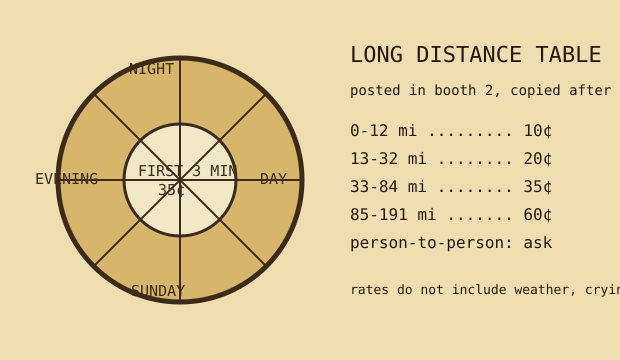

A booth card was less a price list than a negotiation with distance. The first three minutes did the damage; after that, the call became a metered leak.

| distance band | day station | evening station | night / Sunday |
|---|---|---|---|
| 0-12 miles | 10¢ | 10¢ | 10¢ |
| 13-32 miles | 25¢ | 20¢ | 15¢ |
| 33-84 miles | 45¢ | 35¢ | 25¢ |
| 85-191 miles | 75¢ | 60¢ | 45¢ |
| over 191 miles | ask operator | ask operator | ask twice |
Person-to-person calls billed differently because the network was asked to find a human, not a telephone. The distinction mattered when a household had one wall phone and four people pretending not to wait by it.